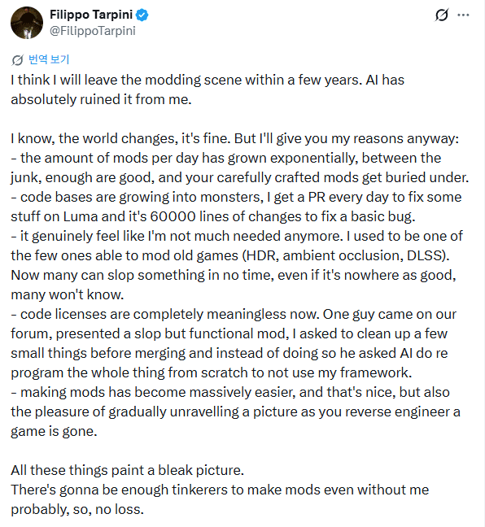

https://github.com/Filoppi/Luma-Framework
HDR 정상화, 구작 게임에 DLSS 지원 등으로
유명한 루마프레임워크의 개발자 중 대장인
Pumbo가 최근 엄청난 AI 발전속도로 인해
현타를 느껴 모딩씬에서 은퇴를 선언함...
이제 사실상 모든 게임에 '딸깍' 한번만으로
업스케일러 구현이 가능해졌는데
이로 인해 더이상 본인이 좋아하던 취미가
예전같지 않아졌다고 생각하는 듯..
마치 RPG 판에 자동사냥이 들어온 순간과 비슷하게 느껴짐
근데 지금은 AI가 자동사냥 뿐만 아니라
보스도 자동으로 잡고 강화고 자동으로 하고
심지어 쌀까지 자동으로 팔아준다는 거임..

앞으로 몇 년 안에 모딩 커뮤니티를 떠날 것 같다.
AI 때문에 모딩판이 완전히 예전 같지 않게 느껴진다.
세상이 변하는 거야 괜찮다.
그래도 내가 그렇게 생각하는 이유를 적어보겠다.
1. 하루에 올라오는 모드의 양이 기하급수적으로 늘었다.
물론 그중에는 괜찮은 것들도 분명히 있지만,
정성들여 만든 모드들이 쓰레기 모드들에 파묻혀 버린다.
2. 코드베이스가 괴물처럼 커지고 있다.
요즘은 Luma에 뭔가 기본적인 버그 하나를 고쳐달라는 PR이
하루에 하나씩 오는데, 변경 사항이 무려 6만 줄에 달한다.
3.이제 내가 더이상 필요하지 않은 사람처럼 느껴진다.
예전에는 오래된 게임에 HDR이나 앰비언트 오클루전,
DLSS 같은 기능을 넣을 수 있는 사람이 몇 안 됐다.
그런데 이제는 많은 사람들이 짧은 시간 안에
AI로 대충 뭔가를 만들어낼 수 있다.
완성도가 내 것만큼 좋지는 않더라도,
많은 사람들은 그 차이를 알지 못할 것이다.
4. 이제 코드 라이선스라는 게 완전히 무의미해진 것 같다.
얼마 전 우리 포럼에 어떤 사람이 AI로 대충 만든,
그래도 작동은 하는 모드를 가져왔다.
내가 통합하기 전에 몇 가지 사소한 부분만 정리해 달라고 했더니,
그 사람은 그렇게 하는 대신 AI에게 아예 내 프레임워크를
사용하지 않는 방식으로 처음부터 다시 프로그래밍하라고 했다.
모드를 만드는 일이 엄청나게 쉬워진 것은 분명 좋은 일이다.
하지만 동시에, 조금씩 퍼즐을 풀어가듯
구조를 밝혀내는 즐거움은 사라져버렸다.
이런 모든 것들이 꽤 암울한 그림을 그리고 있다.
나 없이도 모드를 만들려는 사람들이 충분히 있을 테니,
내가 떠난다고 해서 별 손실은 없을 것이다.
아타리 쇼크가 모든 산업에서 발생할거같음
검수안한 저퀄리티 딸깍 스레기들이 너무 많아짐